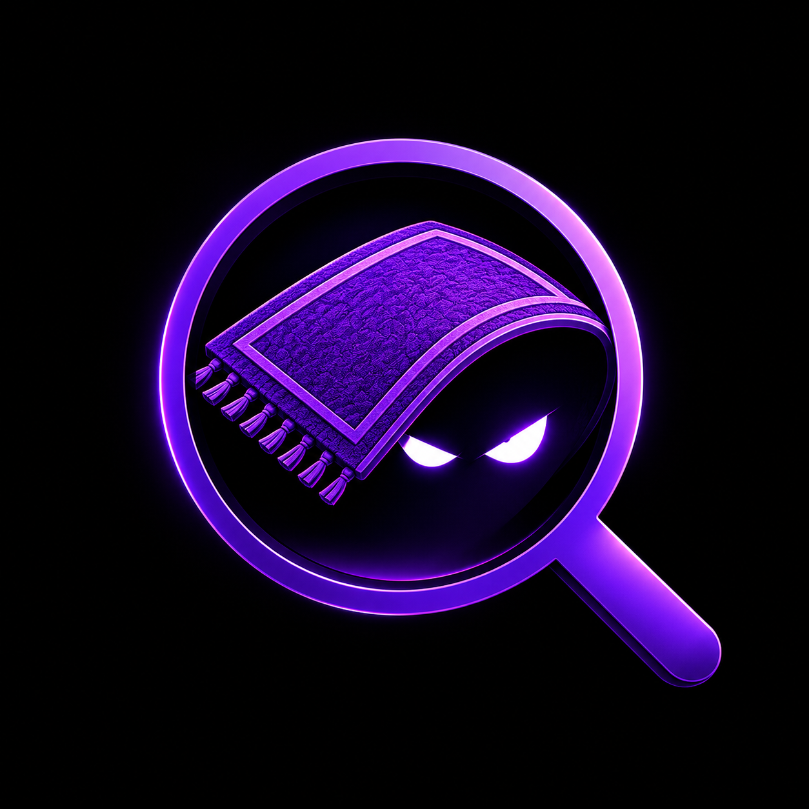

Liquidity warnings
Rugscope highlights thin pools, new pools, and sharp liquidity drops that may make a token easier to manipulate.

RugscopeChrome Extension
See token risk while you browse trading pages. Rugscope checks the token on your screen, opens a movable risk panel, marks tracked wallet activity directly on the page, and shows risk details without making you leave the page.
Live Page Scans
Rugscope highlights thin pools, new pools, and sharp liquidity drops that may make a token easier to manipulate.
For Solana tokens, Rugscope checks authority, LP lock, holder concentration, and other creator-related warning signs.
Rugscope adds compact badges beside tracked, dev, buy, and sell wallet matches on the page you are already viewing.
Add wallets you care about and Rugscope marks their buys or sells, sends alerts, and keeps an alert history page in the extension.
Install Rugscope
For your safety, Chrome does not let websites install downloaded extensions by themselves. After downloading Rugscope, you approve it from Chrome's Extensions page and then it can scan token pages automatically.
chrome://extensions and turn on the Developer mode switch. Chrome uses this switch for manually added extensions.
rugscope-extension folder, then open a token page.